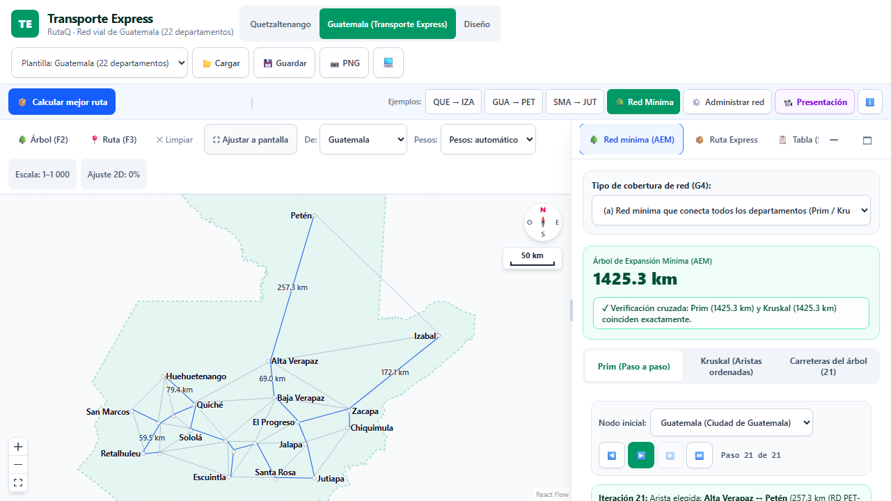
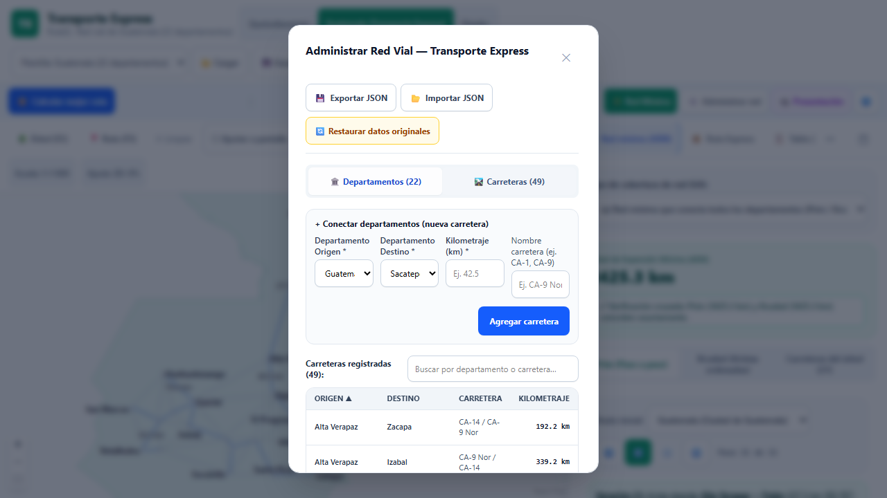
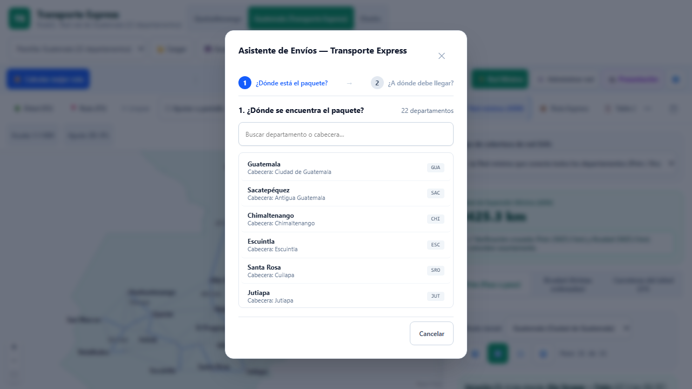
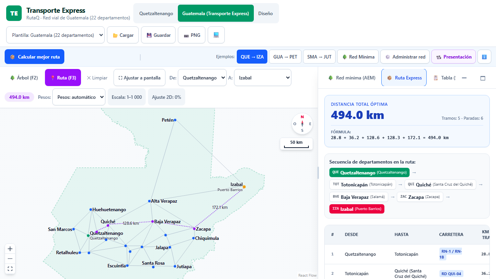
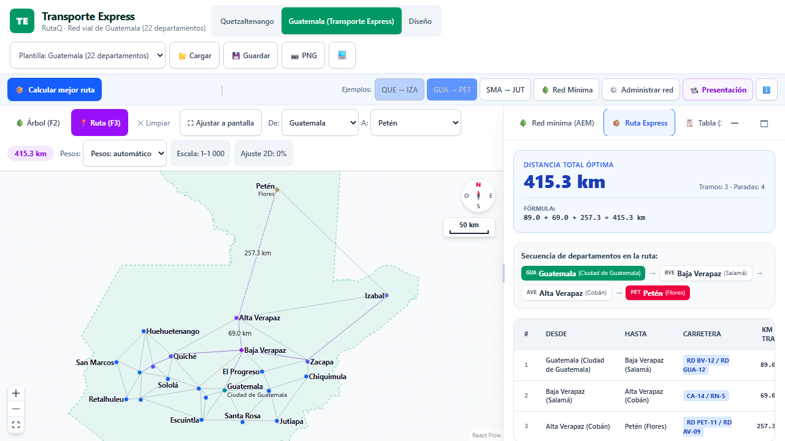
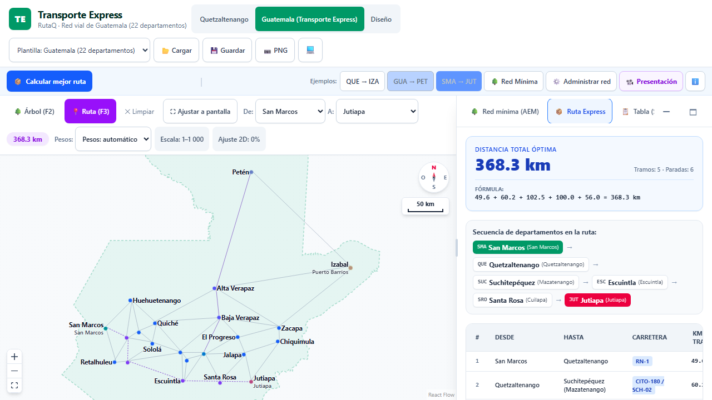
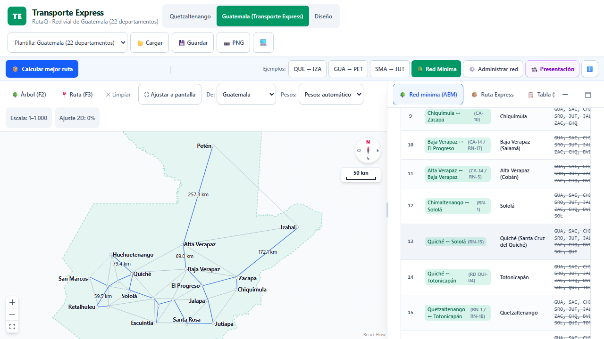
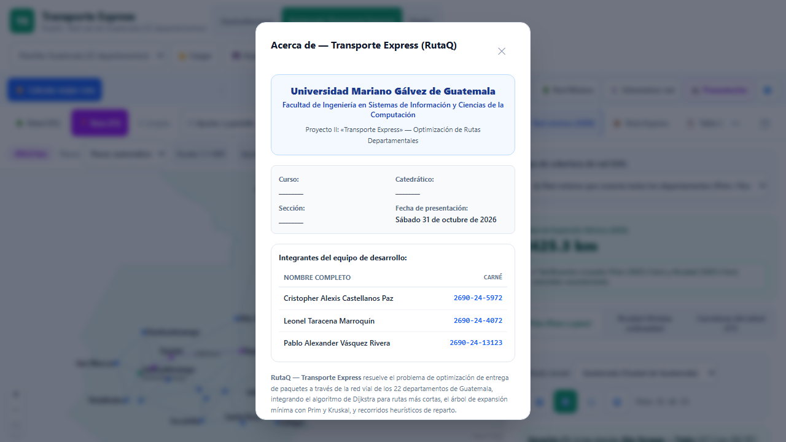
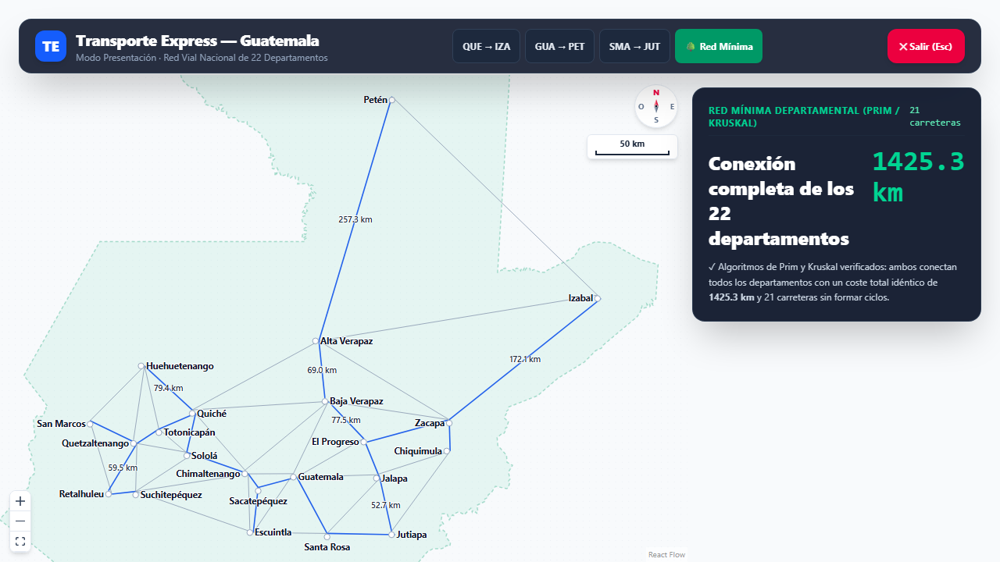

UNIVERSIDAD MARIANO GÁLVEZ DE GUATEMALA · INGENIERÍA EN SISTEMAS
Transporte Express — Ruta Más Corta
Optimización de Rutas Departamentales y Red Troncal Mínima (RutaQ)
DATOS ACADÉMICOS
- Curso: Investigación de Operaciones
- Catedrático: Ing. Samuel Isaac Gómez Moreno
- Semestre y Carrera: 6.º semestre, Ingeniería en Sistemas
- Fecha: Sábado 31 de octubre de 2026
- Plataforma: https://criss-paz.github.io/rutaq/
INTEGRANTES DEL EQUIPO
-
Cristopher Alexis Castellanos Paz
Carné: 2690-24-5972
-
Leonel Taracena Marroquín
Carné: 2690-24-4072
-
Pablo Alexander Vásquez Rivera
Carné: 2690-24-13123
22 Cabeceras Departamentales · 49 Carreteras Directas · Algoritmos: Dijkstra, Prim y Kruskal
Buenos días ingeniero Samuel Gómez y compañeros. Hoy les presentamos la solución al Proyecto II de Investigación de Operaciones: el Sistema de Optimización de Rutas Departamentales y Red Troncal Mínima para la empresa Transporte Express, desarrollado sobre nuestra plataforma web RutaQ. El equipo está integrado por Cristopher Alexis Castellanos Paz, Leonel Taracena Marroquín y Pablo Alexander Vásquez Rivera, del 6.º semestre de Ingeniería en Sistemas de la Universidad Mariano Gálvez de Guatemala.
PROBLEMÁTICA EN TRANSPORTE EXPRESS
- Retrasos Críticos: Paquetes con entregas tardías sistemáticas en todo el país.
- Rutas Empíricas: Conductores eligen trayectos por intuición sin planificación cuantitativa.
- Desvíos Innecesarios: Tránsito por vías secundarias que incrementa combustible y desgaste.
- Falta de Red Cuantificada: Carencia de un catálogo digital oficial con distancias reales.
REQUERIMIENTOS FORMALES DEL ENUNCIADO
- 1. Ingresar los 22 departamentos con cabeceras y coordenadas georreferenciadas.
- 2. Registrar la red vial interdepartamental con distancias reales en kilómetros.
- 3. Responder interactivamente: ¿Dónde está el paquete? y ¿A dónde va?
- 4. Determinar y presentar la mejor ruta con desglose de tramos y fórmula matemática.

Figura 1: Vista general de RutaQ orientada al norte con los 22 departamentos
Transporte Express es una compañía guatemalteca de logística que distribuye encomiendas a nivel nacional. La problemática central era que sus paquetes llegaban sistemáticamente tarde a destino debido a la falta de planificación. Los conductores tomaban rutas empíricas o hábitos individuales con desvíos innecesarios, sin contar con una red vial cuantificada con distancias reales ni una herramienta automatizada de despacho.
El enunciado del Proyecto II solicita ingresar los 22 departamentos, registrar carreteras con kilometrajes reales, responder a las preguntas clave de dónde está el paquete y hacia dónde va, y presentar la ruta más corta de manera clara, visual y matemáticamente respaldada.
V = 22 VÉRTICES (CABECERAS DEPARTAMENTALES)
- Cada nodo representa la cabecera oficial con coordenadas latitud/longitud en proyección Web Mercator (norte arriba).
- Códigos canónicos inmutables de 3 letras:
GUA, QUE, PET, IZA, SMA, JUT...
E = 49 ARISTAS DIRECTAS ENTRE VECINOS
- Vecindad Territorial: Frontera geográfica compartida (contacto ≤ 200 m).
- Umbral de Paso: No cruzar ni aproximarse a < 2.0 km de otra cabecera intermedia.
- Descartes Auditados:
JAL–ZAC y PET–QUI descartadas por violar el umbral.
W(e) PESOS: DISTANCIA REAL DE CONDUCCIÓN (KM)
- Pesos estrictamente positivos (W > 0) en asfalto transitable con nomenclatura vial oficial.
- Grafo 100 % conexo: conectividad garantizada entre todo par de departamentos.

Figura 2: Grafo completo: 22 cabeceras departamentales y 49 carreteras directas
Para resolver el problema con rigor científico, modelamos la red vial de Guatemala como un grafo no dirigido ponderado y conexo G = (V, E, W). Contamos con 22 vértices que corresponden a las cabeceras departamentales oficiales con coordenadas georreferenciadas exactas en proyección Web Mercator con orientación norte-arriba.
Para definir las carreteras directas aplicamos un criterio objetivo y reproducible: los departamentos deben compartir frontera territorial y la carretera no debe cruzar a menos de 2 km de otra cabecera intermedia. De este modo descartamos conexiones compuestas o atajos irreales (como JAL-ZAC y PET-QUI), obteniendo 49 aristas directas con pesos estrictamente positivos correspondientes a distancias reales de conducción en kilómetros.
35 / 49
Ruta Recomendada
(OSRM a ±10 %)
9 / 49
Ruta Alternativa
(OSRM a ±10 %)
5 / 49
Valor Google Maps
(Sin coincidencia)
METODOLOGÍA DE RECOLECCIÓN Y AUDITORÍA
- OpenStreetMap & OSRM: Geocodificación con Nominatim y cálculo de distancias de conducción.
- Auditoría Manual 49/49: Cada carretera fue validada punto a punto en Google Maps.
- Tolerancia ±10 %: 35 tramos coinciden con la ruta recomendada y 9 con una ruta alternativa de Google Maps.
- 5 Tramos con Valor de Google Maps: Ninguna ruta coincidió a ±10 %, usándose el valor de Google Maps (CHI-SOL, CHI-SUC, JAL-PRO, IZA-PET, QUE-TOT).
- Caso Crítico IZA–PET (287.0 km): Conexión por la CA-13 tomada de Google Maps (OSRM daba 387.1 km), evitando desvíos falsos por Alta Verapaz.

Figura 3: Catálogo interactivo de las 49 carreteras auditadas con kilometraje real
Un aspecto fundamental de nuestro trabajo fue garantizar que los datos fueran 100 % reales y auditables. Extrajimos las distancias y geometrías mediante OSRM sobre OpenStreetMap y validamos manualmente las 49 carreteras frente a Google Maps bajo un criterio técnico de tolerancia a ±10 %: 35 tramos con OSRM a ±10 % de la ruta recomendada por Google Maps; 9 tramos con OSRM a ±10 % de una ruta alternativa que ofrece Google Maps; y 5 tramos donde ninguna coincidió (CHI-SOL, CHI-SUC, JAL-PRO, IZA-PET, QUE-TOT), en los cuales se utiliza directamente el valor de Google Maps.
Un caso crítico fue la arista Izabal–Petén de 287.0 km por la CA-13: OSRM arrojaba 387.1 km por un trazado indirecto, por lo que adoptar el valor oficial de Google Maps evita desviar las encomiendas por Alta Verapaz. Cada número en nuestro sistema proviene de carreteras reales de Guatemala debidamente auditadas.
PRINCIPIO VORAZ (GREEDY) Y RELAJACIÓN
COMPLEJIDAD Y CONDICIÓN DE NO NEGATIVIDAD
- Complejidad Temporal:
O((V + E) log V) implementado con min-heap binario.
- ¿Por qué NO admite pesos negativos? Porque asume que agregar aristas no puede disminuir distancias acumuladas. Un peso negativo violaría la permanencia de nodos cerrados. En carreteras reales, W > 0 siempre.

Figura 4: Paso 1 del Asistente: selección de origen en Transporte Express
Para calcular la mejor ruta para cada paquete implementamos el Algoritmo de Dijkstra. Su funcionamiento se basa en una estrategia voraz o greedy: a partir de la cabecera origen, examina las aristas adyacentes y relaja las distancias tentativas hacia los vecinos. Gracias a una cola de prioridad basada en min-heap binario, su complejidad temporal es de O((V+E) log V).
Es crucial enfatizar que Dijkstra exige pesos estrictamente no negativos (W > 0), lo cual se cumple naturalmente en distancias físicas de carreteras. Si existieran costos negativos o subsidios compensatorios, Dijkstra fallaría al fijar nodos permanentemente, obligando a usar algoritmos como Bellman-Ford.
494.0 km
Distancia Total Mínima
5 Tramos
Carreteras Conectadas
SECUENCIA Y CARRETERAS OFICIALES
- 1. QUE → TOT: 28.8 km — RN-1 / RN-1B
- 2. TOT → QUI: 36.2 km — RD QUI-04
- 3. QUI → BVE: 128.6 km — RD QUI-2 / RN-5
- 4. BVE → ZAC: 128.3 km — CA-9 Nor / CA-14
- 5. ZAC → IZA: 172.1 km — CA-9 Nor
FÓRMULA ARITMÉTICA DE COMPROBACIÓN
28.8 + 36.2 + 128.6 + 128.3 + 172.1 = 494.0 km

Figura 5: Ruta óptima QUE → IZA resaltada en púrpura sobre el mapa de RutaQ
Veamos nuestro primer caso de demostración: un envío desde Quetzaltenango hasta Puerto Barrios, Izabal.
El sistema determina una distancia óptima de 494.0 km a través de 5 tramos interdepartamentales:
1. QUE → TOT: 28.8 km por RN-1 / RN-1B
2. TOT → QUI: 36.2 km por RD QUI-04
3. QUI → BVE: 128.6 km por RD QUI-2 / RN-5
4. BVE → ZAC: 128.3 km por CA-9 Nor / CA-14
5. ZAC → IZA: 172.1 km por CA-9 Nor
La interfaz resalta la ruta sobre el mapa interactivo, desglosa cada tramo con su carretera oficial y presenta la fórmula aritmética de comprobación.
DEMO 2: CIUDAD DE GUATEMALA → FLORES, PETÉN
- Distancia Total: 415.3 km (3 tramos directos)
- Secuencia: GUA → BVE → AVE → PET
- Tramos: GUA–BVE (89.0 km, RD BV-12 / RD GUA-12) • BVE–AVE (69.0 km, CA-14 / RN-5) • AVE–PET (257.3 km, RD PET-11 / RD AV-09)
- Fórmula:
89.0 + 69.0 + 257.3 = 415.3 km

Figura 6: Enlace capital-norte (GUA → PET = 415.3 km)
DEMO 3: SAN MARCOS → JUTIAPA
- Distancia Total: 368.3 km (5 tramos Costa Sur)
- Secuencia: SMA → QUE → SUC → ESC → SRO → JUT
- Tramos: SMA–QUE (49.6 km, RN-1) • QUE–SUC (60.2 km, CITO-180 / SCH-02) • SUC–ESC (102.5 km, CA-02 OCC) • ESC–SRO (100.0 km, CA-2 OR / RN-16) • SRO–JUT (56.0 km, CA-1 Or)
- Fórmula:
49.6 + 60.2 + 102.5 + 100.0 + 56.0 = 368.3 km

Figura 7: Corredor Costa Sur y frontera oriental (SMA → JUT = 368.3 km)
En la Demo 2 resolvemos el corredor norte: Ciudad de Guatemala a Flores, Petén. La ruta óptima es de 415.3 km recorriendo tres tramos:
- GUA → BVE: 89.0 km por RD BV-12 / RD GUA-12
- BVE → AVE: 69.0 km por CA-14 / RN-5
- AVE → PET: 257.3 km por RD PET-11 / RD AV-09
En la Demo 3 conectamos San Marcos con Jutiapa, totalizando 368.3 km a través de cinco tramos:
- SMA → QUE: 49.6 km por RN-1
- QUE → SUC: 60.2 km por CITO-180 / SCH-02
- SUC → ESC: 102.5 km por CA-02 OCC
- ESC → SRO: 100.0 km por CA-2 OR / RN-16
- SRO → JUT: 56.0 km por CA-1 Or
Ambas rutas demuestran que el sistema encuentra de forma infalible la distancia mínima con las carreteras exactas del modelo.
21 Carreteras
Aristas del Árbol (V - 1)
1 425.3 km
Longitud Total Mínima
IMPLEMENTACIÓN DUAL DETERMINISTA
- Algoritmo de Prim: Crecimiento voraz por corte desde una raíz, incorporando siempre la arista incidente de menor peso.
- Algoritmo de Kruskal: Ordenamiento global de aristas con estructura Union-Find (conjuntos disjuntos) para evitar ciclos.
- Convergencia Idéntica: Ambos algoritmos producen exactamente 1 425.3 km de asfalto y las mismas 21 carreteras troncales.
¿RUTA MÁS CORTA VS. ÁRBOL DE EXPANSIÓN MÍNIMA?
- Ruta Más Corta (Dijkstra): Optimiza el viaje de un paquete entre un par específico.
- Red Mínima (AEM): Optimiza el costo global de la red comunicando todos los nodos sin ciclos. Un camino dentro del AEM no siempre es la ruta más corta punto a punto.

Figura 8: Árbol de Expansión Mínima (1 425.3 km y 21 aristas) en el mapa nacional
Además de calcular rutas para paquetes individuales, Transporte Express requería planificar su infraestructura: ¿cuál es la red vial mínima que mantiene conectados los 22 departamentos con el menor kilometraje total? Esto se modela con el Árbol de Expansión Mínima (AEM).
En RutaQ implementamos tanto el Algoritmo de Prim como el de Kruskal con Union-Find para evitar ciclos. Ambos algoritmos convergen con precisión determinista en una red de exactamente 21 carreteras y 1 425.3 km.
La diferencia conceptual es clave: la Ruta Más Corta de Dijkstra optimiza el trayecto individual entre dos puntos, mientras que el AEM optimiza el costo global de la red completa interconectando la totalidad del territorio nacional.
1. ASISTENTE TRANSPORTE EXPRESS
- Flujo guiado de 2 pasos («¿Dónde está?» y «¿A dónde va?»).
- Selección táctil en mapa o menú con cálculo instantáneo.
- Hoja de ruta completa con distancias parciales y fórmula visible.
2. ADMINISTRADOR DE RED VIAL
- Agregar, editar, eliminar y buscar departamentos y carreteras con validaciones.
- Al eliminar una carretera, la ruta se recalcula al instante.
- Aviso automático si la red vial queda desconectada.
3. EJECUCIÓN TABULADA PASO A PASO
- Tablas didácticas idénticas a los ejercicios y evaluaciones de clase.
- Traza analítica de Prim, Kruskal, Dijkstra y Floyd-Warshall.
- Registro explícito de nodos incorporados y aristas descartadas por ciclo.
4. MODO PRESENTACIÓN Y RESPONSIVE
- Vista de alto contraste 16:9 optimizada para proyectores de aula.
- Diseño completamente adaptable a celulares, tablets y computadoras.
- Control con atajos de teclado (F para pantalla completa, flechas de paso).
RutaQ no es un prototipo estático, sino un sistema web interactivo de nivel profesional. Cuenta con cuatro módulos centrales:
1. El Asistente guiado de Transporte Express en dos pasos («¿Dónde está el paquete?» y «¿A qué departamento debe entregarse?»).
2. Un Administrador de Red para agregar, editar, eliminar y buscar departamentos y carreteras con validaciones; al eliminar una carretera la ruta se recalcula al instante y se muestra un aviso si la red queda desconectada.
3. Tablas pedagógicas paso a paso que replican la metodología vista en clase para Prim, Kruskal, Dijkstra y Floyd-Warshall.
4. Un Modo Presentación panorámico integrado, optimizado para proyectores de aula y pantallas táctiles móviles.
1 168 / 1 168 PARES CON NETWORKX (PYTHON)
- Contraste exhaustivo del 100 % de caminos mínimos: 0 discrepancias.
- 10 / 10 instancias de Árbol de Expansión Mínima idénticas a
networkx.mst.
148 / 148 PRUEBAS AUTOMATIZADAS (PLAYWRIGHT)
- Pruebas E2E de regresión funcional, visual y de estado aprobadas al 100 %.
- Pruebas ejecutadas en 4 dispositivos: Desktop Chrome, iPhone 13 (WebKit), Pixel 7 e iPad.
AUDITORÍA DE GOOGLE LIGHTHOUSE

Figura 9: Ficha técnica y verificación de integridad en la interfaz de usuario
La confiabilidad de nuestro sistema está respaldada por una verificación computacional rigurosa. Contrastamos el 100 % de los caminos mínimos y árboles de expansión contra la biblioteca científica NetworkX en Python: 1 168 de 1 168 pares analizados (incluyendo los 484 pares de Guatemala y grafos de control) arrojaron idénticos resultados con cero discrepancias, y 10 de 10 instancias de AEM fueron idénticas.
En aseguramiento de calidad de software, ejecutamos 148 pruebas automatizadas End-to-End con Playwright en 4 dispositivos (Desktop Chrome, iPhone 13 en WebKit, Pixel 7 e iPad) con 100 % de éxito. Finalmente, la auditoría oficial de Google Lighthouse certificó un rendimiento de 91, accesibilidad de 95, mejores prácticas de 100 y SEO de 100.
1. RESOLUCIÓN DE LA PROBLEMÁTICA REAL
- Transporte Express erradica la selección empírica de rutas por intuición individual.
- Dijkstra garantiza entregas puntuales, ahorro de combustible y hoja de ruta transparente.
- Impacto cuantificable en la operación logística de distribución nacional.
2. RIGOR CARTOGRÁFICO Y REPRODUCIBILIDAD
- Red de 22 departamentos y 49 aristas sustentada en OpenStreetMap y auditada en Google Maps.
- Inclusión del tramo IZA–PET (287.0 km) por la CA-13 que previene desvíos falsos por Alta Verapaz.
- Criterios reproducibles de vecindad territorial y umbrales de proximidad.
3. DOMINIO ALGORÍTMICO INTEGRAL
- Coexistencia armónica: Dijkstra para paquetes puntuales y Prim/Kruskal para red troncal.
- Ambos algoritmos de MST convergen en exactamente 21 carreteras y 1 425.3 km.
- Comprensión teórica fundamentada de por qué Dijkstra exige pesos positivos.
4. CALIDAD DE INGENIERÍA DE SOFTWARE
- Código 100 % en TypeScript, modular, reactivo y ejecutable directamente en el navegador.
- Verificación cruzada con NetworkX (1 168/1 168) y 148 pruebas automatizadas Playwright.
- Despliegue activo en la web y repositorio con documentación exhaustiva.
En conclusión, el proyecto demuestra el poder de la Investigación de Operaciones aplicada a la logística real:
1. Transporte Express erradica la improvisación de rutas sustituyendo la intuición por algoritmos deterministas.
2. El modelo matemático está fundamentado en datos reales de los 22 departamentos y 49 carreteras auditadas.
3. Se integraron sinérgicamente Dijkstra para el despacho diario y Prim/Kruskal para la planeación de la red troncal (1 425.3 km).
4. El código en TypeScript es modular, robusto y validado contra bibliotecas científicas de la industria, cumpliendo con creces los requerimientos del curso.
SESIÓN DE PREGUNTAS Y DEMOSTRACIÓN EN VIVO
¡Muchas Gracias por su Atención!
Transporte Express — Sistema de Optimización de Rutas (RutaQ)
ACCESO AL SISTEMA Y DOCUMENTACIÓN

RutaQ listo para demostraciones interactivas en vivo
¿Alguna pregunta o demostración en vivo adicional?
Cristopher Castellanos (2690-24-5972) · Leonel Taracena (2690-24-4072) · Pablo Vásquez (2690-24-13123)
Muchas gracias catedrático y compañeros por su tiempo y atención. El sistema se encuentra completamente desplegado y operativo en la web para que cualquiera pueda probarlo en su teléfono o computadora en criss-paz.github.io/rutaq/, y la versión web de estas diapositivas está en /presentacion/.
El código fuente completo y los reportes de verificación están abiertos en GitHub. Quedamos a su entera disposición para responder cualquier pregunta o realizar las pruebas de ruta en vivo que deseen solicitar.